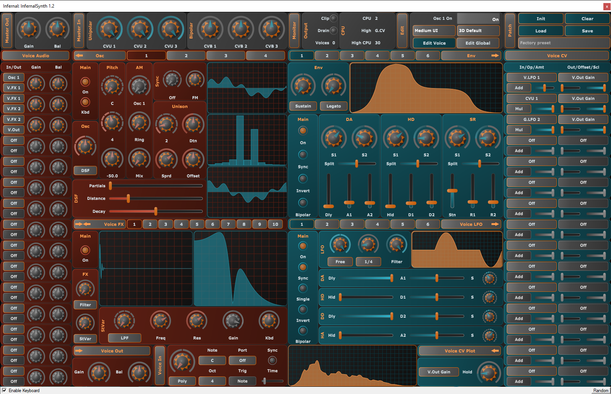
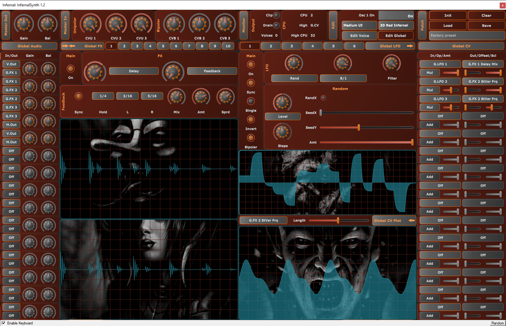
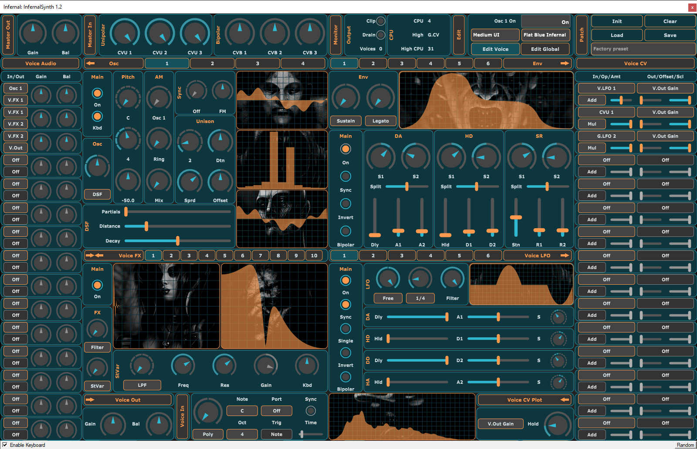
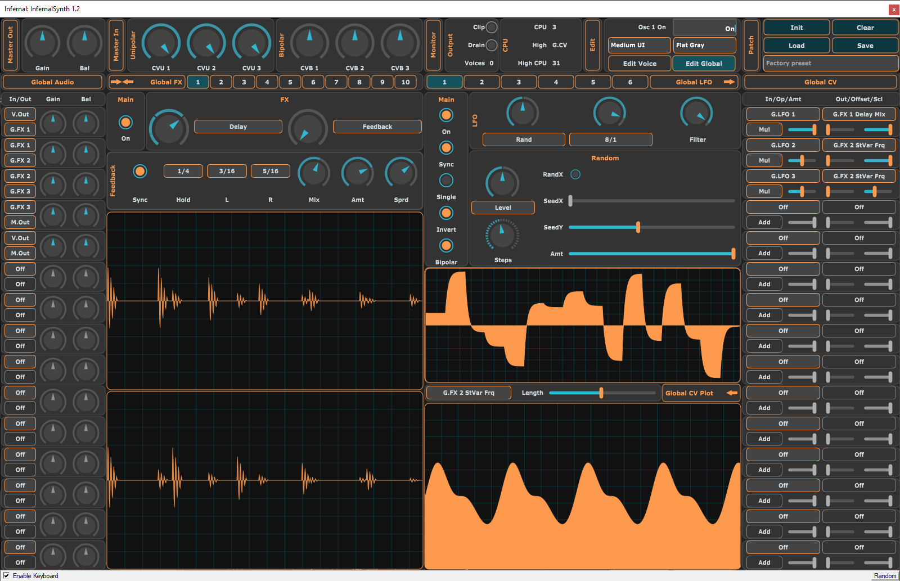
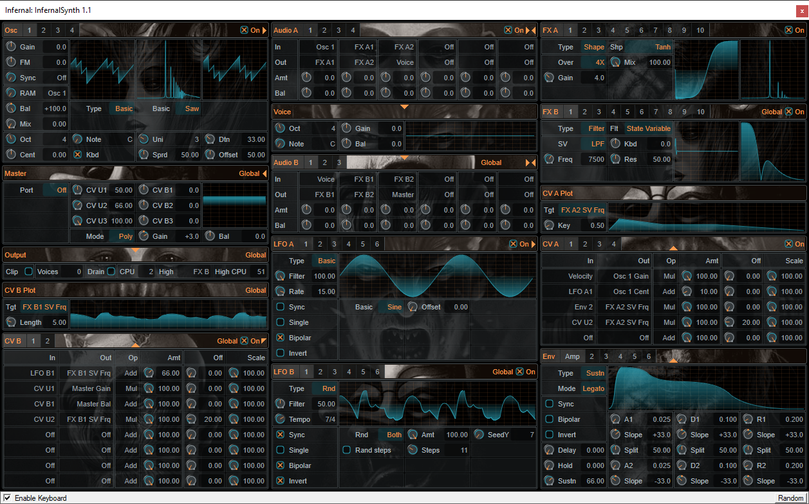

InfernalSynth
An open source semi-modular VST3 synthesizer and effect plugin.
Requirements
64-bit Windows 7+ and a CPU with AVX support.
Tested in Renoise, REAPER, Bitwig Studio and FL Studio.
Distributed as VST3, no other plugin formats supported.
Download
When in doubt, you want the release version.
| V1.2 Instrument only |
| release |
| |
| |
| August 2, 2023 |
| Temporary fix for hosts which don't do
| well with multiple plugins in the same dll. |
| V1.2 |
| release |
| debug |
| demos |
| July 29, 2023 |
| UI Rewrite. |
| V1.1.3 |
| release |
| debug |
| demos |
| April 5, 2023 |
| Initial release. |
About
Infernal on KVR:
https://www.kvraudio.com/product/infernalsynth-by-sjoerdvankreel.
Read the manual:
https://github.com/sjoerdvankreel/infernal-synth/blob/main/MANUAL.md.
Read the changelog:
https://github.com/sjoerdvankreel/infernal-synth/blob/main/history.txt.
See the github page for details and source code:
https://github.com/sjoerdvankreel/infernal-synth.
Play around with the demo projects:
https://github.com/sjoerdvankreel/infernal-synth/tree/main/demo.
Contact
For questions, feedback or constructive criticism use the github project or contact me directly at sjoerdvankreel at gmail.com.
Install
Delete any previous installations first. Extract the zip archive and copy the InfernalSynth folder(s) to C:\Program Files\Common Files\VST3.
For windows 7 and 8, you'll also need Microsoft's VC++ redistributable package, see the X64 download over here:
https://learn.microsoft.com/en-US/cpp/windows/latest-supported-vc-redist?view=msvc-170.
Note: you have to keep the folder structure intact, including binaries, presets and themes. VST3's are bundles, not files.
Demos
Screenshots V1.2
See screenshots for all themes.




Screenshot V1.1
